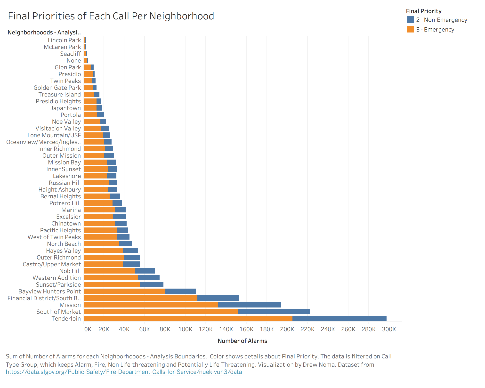

Call Type Group Trends for Each Neighborhood
Data Wrangling
Data was wrangled first prior to download, through the editor provided on the data provider's website. There, we filtered the data for calls between the years of 2013 and 2019. Then in Tableau, we filtered out any rows that did not have a valid Call Type Group value;Visualizations
This visualization shows the number of calls for each Call Type Group in each neighborhood. The four valid Call Type Groups are:
- Alarm
- Fire
- Non Life-Threatening
- Potentially Life-Threatening
- Tenderloin
- South of Market
- Mission
- Financial District/South Beach
- Bayview Hunter's Point
To give more context, another visualization is included to show the total number of calls and the Final Priorities of the calls from each neighborhood. The bars of each stack are encoded by color for Final Priority. The Final Priority is determined by the Fire Departments to say whether or not the call was actually an emergency or not. While people may report an emergency when calling in it is up to the Fire Departments to determine if the call is deemed an emergency or not.
